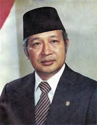

Latar Belakang :
Soeharto Mulai Berkuasa setelah pergolakan politik akibat gerakan G30S. Ia diangkat menjadi presiden kedua Setelah Soekarno
Masa pemerintahanya dikenal sebagai Masa orde baru dengan fokus utama stabilitas nasional dan pembangunan ekonomi
Tujuan
- Membangun ekonomi indonesia melalui (REPELITA)
- menciptakan stabilitas politik dan keamanan sosial
- Menjadi anggota komunisme dan menjaga idelogi pancasila
Pelaksaan Kebijakan:
POLITIK : Soeharto memperkuat militer dan membatasi partai politik hanya TIGA politik yang di ijinkan yaitu (Golkar, PDI, PPP).
Ekonomi : REPELITA di terapkan hanya untuk pembangunan disektor pertanian , industri , infrastuktur.
Sosial dan Budaya : Diterapkan program transmigrasi.
Pendidikan : Menerapkan sistem wajib belajar dan meningkatkan Literasi.
Pertahanan dan Keamanan : Soehato memperkuat peran militer dalam pemerintahan dengan konsep dwifungsi ABRI.
Kekurangan dan Kelebihan :
Kelebihan : pencapian ekonomi yang signifikat, stabilitas politik serta infrastukur yang berkembang.
Kekurangan : Pembatasan kebebasan berpolitik , sentralisasi kekuasaan korupsi yang meluas.
Akhir Pemerintahan
Krisis ekonomi asia pada tahun 1997 memicu ketidakpuasan yang meluas di masyarakat aksi protes mahasiswa diberbagai daerah dan memaksa soeharto mundur pada 21 mei 1998.
KEMBALI KE ATAS!